정보통신산업기사 (2020-03-07 기출문제)
1과목: 디지털전자회로
1. 다음 그림의 정전압 다이오드 회로에서 입력이 ±2[V]변화할 때, 출력전압의 변화는? (단, 제너 다이오드의 내부저항은 rd=4[Ω], 저항은 Rs=200[Ω]이다.)
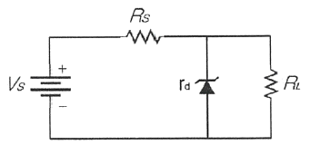
- ±10[mV]
- ±20[mV]
- ±30[mV]
- ±40[mV]
(정답률: 52%)

2. 제너다이오드에서 제너전압이 10[V], 전력이 5[W]인 경우 최대전류의 크기는?
- 0.⑤[A]
- 0.5[A]
- 0.⑤[mA]
- 0.5[mA]
(정답률: 66%)
3. 다음 그림은 정전압 기본구성도를 나타낸 것이며, 빈 칸 (a), (b), (c)에 가장 바람직한 회로는?
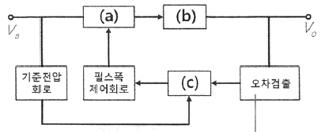
- (a) 스위칭회로, (b) 오차증폭회로, (c) 필터회로
- (a) 스위칭회로, (b) 필터회로, (c) 오차증폭회로
- (a) 필터회로, (b) 스위칭회로, (c) 오차증폭회로
- (a) 오차증폭회로, (b) 필터회로, (c) 스위칭회로
(정답률: 67%)
4. 베이스 공통 증폭회로의 특징으로 틀린 것은?
- 입력저항이 작다.
- 출력저항이 크다.
- 전류이득은 0.96∼0.98 정도이다.
- 출력전압과 입력전압은 역 위상이다.
(정답률: 63%)
5. 다음 중 공통 컬렉터 증폭기의 특징으로 옳은 것은?
- 입력저항이 매우 작다.
- 출력저항이 매우 작다..
- 전류이득이 매우 작다.
- 입출력간 전압위상을 다르게 할 수 있다.
(정답률: 53%)
6. 다음 중 부궤환(Negative Feedback) 효과로 옳지 않은 것은?
- 안정도가 개선된다.
- 이득이 감소한다.
- 왜곡이 개선된다.
- 입력 임피던스가 작아진다.
(정답률: 59%)
7. 차동증폭기의 동위상 신호 제거비(CMRR)를 나타내는 식으로 옳은 것은?
- CMRR = 차동 이득 + 동위상 이득
- CMRR = 차동 이득 - 동위상 이득
- CMRR = 동위상 이득 / 차동 이득
- CMRR = 차동 이득 / 동위상 이득
(정답률: 64%)
8. 다음 중 발진기에 주로 사용되는 것으로 출력신호의 일부를 입력으로 되돌리는 것을 무엇이라고 하는가?
- 정궤환
- 부궤환
- 종단저항
- 고이득
(정답률: 71%)
9. 다음 회로에서 정현파를 발생시키는 발진기로 동작하기 위한 저항 Rf의 값은? (단, C1=C2=C3=0.001[μF]이고, R1=R2=R3=10[kΩ], R4=5[kΩ]이다.)
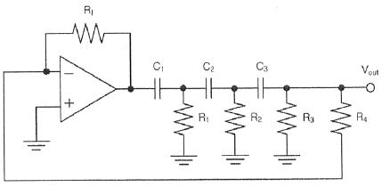
- 5[kΩ]
- 10[kΩ]
- 145[kΩ]
- 290[kΩ]
(정답률: 60%)
10. 다음 중 하틀리 발진기에서 궤환 요소에 해당하는 것은?
- 저항성
- 용량성
- 유도성
- 결합성
(정답률: 72%)
11. 진폭변조(Amplitude Modulation)의 송신기가 그림과 같은 변조파형을 가질 때 반송파전력이 460[mW]이면, 변조된 출력은 몇 [mW]인가?
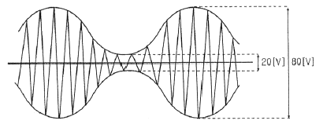
- 442.8[mW]
- 469.4[mW]
- 524.6[mW]
- 542.8[mW]
(정답률: 51%)
12. 주파수변조(Frequency Modulation) 방식에서 다음 중 주파수 대역폭과 최대 주파수 편이의 관계가 옳은 것은?
- 주파수 대역폭은 최대 주파수 편이의 2배이다.
- 주파수 대역폭은 최대 주파수 편이의 3배이다.
- 주파수 대역폭은 최대 주파수 편이의 4배이다.
- 주파수 대역폭은 최대 주파수 편이의 5배이다.
(정답률: 78%)
13. 펄스의 주기와 진폭은 일정하고, 펄스의 폭을 입력신호에 따라 변화시키는 변조 방식은?
- PAM(Pulse Amplitude Modulation)
- PWM(Pulse Width Modulation)
- PPM(Pulse Position Modulation)
- PCM(Pulse Code Modulation)
(정답률: 69%)
14. QPSK에서 반송파의 위상차는?
- π/2
- π
- 2π
- 3π/2
(정답률: 72%)
15. 다음 중 멀티바이브레이터의 특징으로 옳은 것은?
- 파형에 고차의 고조파를 포함하고 있다.
- 부성저항을 이용한 발진기이다.
- 극초단파 발생에 적합하다.
- 회로의 시정수로 신호의 진폭이 결정된다.
(정답률: 52%)
16. 슈미트 트리거 회로에서 최대 루프 이득을 1 이 되도록 조정하면 어떻게 되는가?
- 회로의 응답속도가 떨어진다.
- 루프 이득을 정확하게 1로 유지하면서 높은 안정도를 갖는다.
- 스스로 Reset 할 수 있다.
- 아날로그 정현파가 발생한다.
(정답률: 54%)
17. TTL 게이트에서 스위칭 속도를 높이기 위해 사용하는 다이오드는?
- 바랙터 다이오드
- 제너 다이오드
- 쇼트키 다이오드
- 정류 다이오드
(정답률: 71%)
18. 다음 중 순서 논리 회로에 대한 설명으로 틀린 것은?
- 입력 신호와 순서 논리 회로의 현재 출력상태에 따라 다음 출력이 결정된다.
- 조합 논리 회로와 결합하여 사용할 수 없다.
- 순서 논리 회로의 예로 카운터, 레지스터 등이 있다.
- 데이터의 저장 장소로 이용 가능하다.
(정답률: 69%)
19. 3개의 T 플립플롭이 직렬로 연결되어 있다. 첫 단에 1,000[Hz]의 구형파를 가해주면 최종 플립플롭에서의 출력 주파수는 얼마인가?
- 3,000[Hz]
- 333[Hz]
- 167[Hz]
- 125[Hz]
(정답률: 63%)
20. 다음 중 Access Time이 가장 짧은 것은?
- 자기 디스크
- RAM
- 자기 테이프
- 광 디스크
(정답률: 67%)
2과목: 정보통신기기
21. 다음 중 DTE와 DCE를 상호 연결하기 위해 기계적, 전기적, 기능적, 절차적인 조건들을 표준화한 것은?
- 토폴로지
- DCC 아키텍처
- DTE/DCE 인터페이스
- 참조 모형
(정답률: 84%)
22. 다음 중 정보단말기의 구성 부분 중 전송제어장치의 구성요소가 아닌 것은?
- 입출력 제어부
- 회선 제어부
- 입출력 변환부
- 회선 접속부
(정답률: 64%)
23. 정보 단말기의 고기능화 요소로 틀린 것은?
- 다기능화
- 고가화
- 지능화
- 복합화
(정답률: 82%)
24. 모뎀과 제한된 기능의 다중화기가 혼합된 형태의 변복조기로서 고속 동기식 모뎀에 시분할 다중화 기기를 하나로 합친 것은?
- 멀티포트 모뎀
- 멀티포인트 모뎀
- 고속 모뎀
- 광대역 모뎀
(정답률: 69%)
25. 국내에서 종합유선방송을 포함한 방송공동수신설비에 사용되지 않고 있는 디지털 변·복조방식은?
- PAL
- 8VSB
- QPSK
- 256QAM
(정답률: 58%)
26. 다음 중 DSU(Digital Service Unit)의 특징이 아닌 것은?
- LAN 또는 WAN 상에서 디지털 전용회선 연결에 사용된다.
- 단말기가 디지털 네트워크 서비스를 이용하고자 할 때 필요하다.
- 정확한 동기 유지를 위한 Clock 추출회로가 있다.
- 음성급 전용망에서 디지털 신호를 전송하기 위하여 등화기와 AGC가 필요하다.
(정답률: 77%)
27. 가입자와 직접 연결되지 않고 시내교환기를 서로 연결해 주는 기능을 수행하는 것은?
- 가입자선로
- 시외중계선
- 중계교환기
- 시외교환기
(정답률: 77%)
28. 두 개의 랜을 연결하여 확장된 랜을 구성하는데 사용되며 ISO 7 Layer의 2계층에서 이용되는 장비는?
- 게이트웨이
- 리피터
- 라우터
- 브리지
(정답률: 73%)
29. 다음 중 계층별로 일반적으로 소요될 인터네트워킹 장비를 알맞게 구성한 것은?
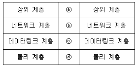
- ⓐ 리피터, ⓑ 브리지
- ⓑ 브리지, ⓒ 라우터
- ⓒ 라우터, ⓓ 게이트웨이
- ⓐ 게이트웨이, ⓓ 리피터
(정답률: 77%)
30. 전화기의 주요 성능으로 접속률(Make Radio)과 절단률(Break Radio) 이 있다. 접속률[%]을 구하는 공식으로 맞는 것은? (단, a : 접속시간, b : 절단시간)
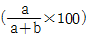
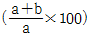
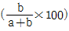
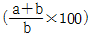
(정답률: 74%)
31. 다음 중 교환기에서 가입자 선을 정합하는 가입자 회로의 기능이 아닌 것은?
- Charging
- Battery Feed
- Coding, Decoding
- Over-voltage Protection
(정답률: 72%)
32. 다음 중 화상통신회의 시스템의 기본적인 구성요소가 아닌 것은?
- 영상 시스템부
- 제어 시스템부
- 음향 시스템부
- 망분배 시스템부
(정답률: 82%)
33. 다음 중 디지털TV와 IPTV 방송의 영상압축 전송기술 방식이 아닌 것은?
- MPEG4
- H.264
- MPEG2
- AC3
(정답률: 74%)
34. 위성의 통신영역은 위성의 고도(h)와 지구국 안테나의 통신가능 최저 양각(θ)의 함수관계로 표시할 수 있다. 다음 중 수식으로 옳은 것은? (단, R : 지구의 반경, β : 커버하는 범위의 중심각)
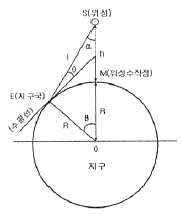
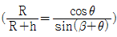
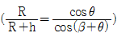
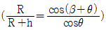
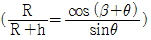
(정답률: 68%)
35. 위성에 정착되는 안테나의 종류와 기능이 틀리게 연결된 것은?
- 무지향성 안테나 - 명령 및 텔리메트리 신호 통신
- 파라보라 안테나 - 스폿빔(Spot Beam)을 만드는데 사용
- 혼 안테나 - 넓은 지역을 커버하는 빔(Beam)을 만드는데 사용
- 야기 안테나 - 위성궤도상 위치 및 자세제어로 사용
(정답률: 68%)
36. 다음 중 이동통신망에서 전력제어의 목적과 거리가 먼 것은?
- 자기 기지국 통화용량의 최대화
- 단말기 배터리 수명 연장
- 인접 기지국 통화 용량의 최대화
- 기지국 소모전력의 최소화
(정답률: 59%)
37. 다음 중 멀티미디어 저작도구의 종류 구분으로 거리가 먼 것은?
- 타임라인 방식
- 페이지 방식
- 광학저장 방식
- 아이콘 방식
(정답률: 65%)
38. 작업에 필요한 정보가 클라우드에 저장되어 있기 때문에 작업자가 스마트기기를 가지고 있으면 언제 어디서나 일을 할 수 있는 체계를 무엇이라 하는가?
- 스마트 워크(Smart Work)
- 스마트 러닝(Smart Learning)
- 스마트 뱅킹(Smart Bank)
- 스마트 상점(Smart Store)
(정답률: 85%)
39. 다음 미디어 분류 중 프리젠테이션 매체의 출력장치로서 거리가 먼 것은?
- 프린터
- 스피커
- 플래시 메모리
- 모바일 기기
(정답률: 80%)
40. 3DTV의 안경식 디스플레이 종류가 아닌 것은?
- 편광방식
- 셔터글라스방식
- 광학입체방식
- 렌티큘라방식
(정답률: 73%)
3과목: 정보전송개론
41. T1 전송시스템은 한 프레임 당 125[μs] 시간 동안 총 24채널을 다중화한다. 이 때 전송로 상의 전송속도는 얼마인가?
- 1.544[Mbps]
- 2.048[Mbps]
- 6.312[Mbps]
- 1.536[Mbps]
(정답률: 71%)
42. PCM은 어떤 디지털 부호화 기술을 사용하는가?
- 압축 부호화 방식
- 보코딩 방식
- 채널 부호화 방식
- 파형 부호화 방식
(정답률: 59%)
43. 다음 중 예측 양자화를 사용하지 않는 것은?
- DPCM
- DM
- PCM
- ADM
(정답률: 65%)
44. 다음 중 입력 신호에 따라 반송파의 진폭과 위상을 동시에 변조하는 변조방식은?
- QAM
- PSK
- ASK
- FSK
(정답률: 80%)
45. 다음 중 TP케이블의 설명으로 틀린 것은?
- 두가닥의 절연 구리선이 감겨 있는 케이블이다.
- STP케이블과 UTP케이블이 있다.
- 근거리 통신망에서 가장 대중화된 전송매체이다.
- 전기적 신호의 간섭이나 잡음에 매우 강하다.
(정답률: 67%)
46. UTP 케이블을 이용하여 공장 내 통신기기를 직접 연결하고자 한다. UTP 케이블의 손실이 5[dB]일 때 케이블의 길이는? (단, UTP 케이블 감쇠 손실은 2.5[dB/km]이다.)
- 0.5[km]
- 1[km]
- 1.5[km]
- 2[km]
(정답률: 70%)
47. 다음 중 광통신에서 사용되는 발광소자는?
- VD(Varactor Diode)
- PIN 다이오드(PIN Diode)
- APD(Avalanche Photo Diode)
- LD(Laser Diode)
(정답률: 76%)
48. 이동통신에서 MSC(Mobile Switching Center)가 단말기의 위치를 탐색하는 것을 무엇이라고 하는가?
- 핸드오프
- 핸드온
- 페이징
- 수신
(정답률: 70%)
49. HDLC(High-Level Data Link Control) 프로토콜의 전송방식은?
- 문자(중심)방식
- 바이트(중심)방식
- 비트(중심)방식
- 혼합동기방식
(정답률: 68%)
50. 전화교환기에서 신호 정보를 집중 처리하는 특성에 의해 적용되는 방식으로 신호 회선과 통화 회선이 분리되어 있는 신호 방식은?
- 집중 신호 방식
- 통화로 신호 방식
- 개별선 신호 방식
- 공통선 신호 방식
(정답률: 64%)
51. 디지털 정보통신시스템이 9,600[bps]로 동작하여야 할 경우 신호요소가 4[bit]로 인코드된다면 이상적인 전송채널에서 최소 얼마의 대역폭을 지녀야 하는가?
- 1,200[Hz]
- 2,400[Hz]
- 4,800[Hz]
- 9,600[Hz]
(정답률: 78%)
52. Baseband의 설명으로 맞는 것은?
- 신호가 원래 가지고 있는 주파수 범위이다.
- 신호의 주파수 대역을 옮기는 것이다.
- 주파수 영역에서 신호의 스펙트럼을 이동시키는 것이다.
- 변조방식을 말한다.
(정답률: 65%)
53. 다음 중 OSI 7계층에서 상위계층에 해당되는 것은?
- 물리계층, 전달계층, 표현계층, 응용계층
- 전달계층, 세션계층, 표현계층, 응용계층
- 네트워크계층, 세션계층, 표현계층, 응용계층
- 네트워크계층, 전달계층, 표현계층, 응용계층
(정답률: 82%)
54. ISO에서 제정한 OSI 7계층 중 제 6계층에 해당되는 것은?
- 응용계층
- 물리계층
- 표현계층
- 전송계층
(정답률: 82%)
55. OSI 계층(Layer) 중 네트워크계층에 대한 설명으로 틀린 것은?
- 계층(Layer) 3에 해당한다.
- 경로를 선택하고, 주소를 정하고, 경로에 따라 패킷을 전달한다.
- 이 계층에 속하는 장비로 라우터가 있다.
- 통신케이블, 리피터, 허브 등의 장비가 이 계층에 속한다.
(정답률: 76%)
56. 다음의 정보통신망 구성방식 중 각 컴퓨터나 터미널 들이 서로 이웃하는 것끼리만 연결하는 방식은?
- 메시형(Mesh Type)
- 성형(Star Type)
- 링형(Ring Type)
- 버스형(Bus Type)
(정답률: 73%)
57. 다음 중 IP address 체계의 C class에 유효한 주소는 무엇인가?
- 35.152.68.39
- 202.96.48.5
- 36.224.250.92
- 128.96.48.5
(정답률: 74%)
58. VLAN에서 트래픽을 전달하도록 설계된 표준 프로토콜로 옳은 것은?
- ISL
- VNET
- 802.1Q
- 802.11A
(정답률: 55%)
59. 서로 다른 컴퓨터에서 동작하고 있는 두 개의 응용 계층 프로토콜 개체가 데이터를 전송하는데 필요한 대화를 관리하고 조정하는 계층으로 옳은 것은?
- 표현 계층
- 응용 계층
- 전송 계층
- 세션 계층
(정답률: 53%)
60. 두 부호어의 비트열이 A=(100100), B=(010100)일 때 두 부호어의 해밍거리는?
- 1
- 2
- 3
- 4
(정답률: 75%)
4과목: 전자계산기일반 및 정보설비기준
61. 주 기억장치에 저장된 명령어를 하나하나씩 인출하여 연산코드 부분을 해석한 다음 해석한 결과에 따라 적합한 신호로 변환하여 각각의 연산 장치와 메모리에 지시 신호를 내는 것은?
- 연산 논리 장치(ALU)
- 입출력 장치(I/O Unit)
- 채널(Channel)
- 제어 장치(Control Unit)
(정답률: 55%)
62. 2진수 10101101.0101을 8진수로 변환한 것 중 옳은 것은?
- 255.22
- 255.23
- 255.24
- 3E.A1
(정답률: 72%)
63. 수치 데이터의 표현방식에 대한 설명 중 틀린 것은?
- 수치 데이터를 표현할 때는 부호, 크기, 소수점 등으로 표시하는데 소수점은 고정소수점 표현방식과 부동소수점 표현방식이 있다.
- 고정소수점 방식에서 정수는 소수점이 수의 맨 왼쪽 끝에 있다고 가정한 것이고, 소수는 소수점이 맨 오른쪽 끝에 있다고 가정한 것이다.
- 소수점의 위치가 어느 한곳에 고정되어 있는 것을 의미하는 것을 고정소수점 방식이라 한다.
- 고정소수점 방식은 주로 정수로 표현하는데 사용된다.
(정답률: 64%)
64. 원시 프로그램에서 나타난 토큰의 열을 그 언어의 문법에 맞도록 만든 트리(Tree)는?
- Parse Tree
- Binary Tree
- Binary Search Tree
- Skewed Tree
(정답률: 56%)
65. 다음 중 운영체제의 기능에 대한 설명이 아닌 것은?
- 사용자와 컴퓨터 간의 인터페이스 기능을 제공한다.
- 소프트웨어의 오류를 처리한다.
- 사용자간의 자원 사용을 관리한다.
- 입출력을 지원한다.
(정답률: 53%)
66. 컴퓨터가 인식하는 명령어를 논리적으로 순서에 맞게 나열하여, 어떤 기능을 처리하게 해주는 것을 무엇이라고 하는가?
- 하드웨어
- 소프트웨어
- 부울대수
- 논리회로
(정답률: 55%)
67. 다음 중 32비트 컴퓨터에서 8 Full Word와 6 Nibble은 각각 몇 비트인가?
- 256비트, 48비트
- 128비트, 24비트
- 256비트, 24비트
- 128비트, 48비트
(정답률: 63%)
68. 다음 중 마이크로컨트롤러에 대한 설명으로 틀린 것은?
- ALU와 CU, Register를 포함하고 있다.
- 자동적으로 제품이나 장치를 제어하는데 사용한다.
- 제품군에는 AVR시리즈와 PIC, 8⑤1 이 있다.
- 구성요소 중에는 타이머와 SPI, ADC, UART, RS-232 등의 입출력 모듈도 필요하다.
(정답률: 47%)
69. 마이크로프로세서가 직접 이해할 수 있는 프로그램 언어를 무엇이라고 하는가?
- 기계어
- 어셈블리어
- C 언어
- Verilog HDL
(정답률: 71%)
70. 명령어의 주소 부분이 그대로 유효 명령어의 주소 필드에 나타나고 분기 형식의 명령어에서는 실제 분기할 주소를 나타내는 주소 모드를 무엇이라고 하는가?
- 상대 주소 모드
- 직접 주소 모드
- 간접 주소 모드
- 베이스 레지스터 어드레싱 모드
(정답률: 63%)
71. 전기통신을 효율적을 관리하고 그 발전을 촉진하기 위한 목적으로 전기통신에 관한 기본적인 사항을 규정하고 있는 법률은?
- 전기통신사업법
- 전기통신기본법
- 정보통신공사업법
- 정보화촉진기본법
(정답률: 73%)
72. 자기 또는 타인에게 이익을 주거나 타인에게 손해를 가할 목적으로 전기통신설비에 의하여 공연히 허위의 통신을 한 자에 대한 벌칙으로 옳은 것은?
- 1년 이하의 징역 또는 1천만원 이하의 벌금
- 3년 이하의 징역 또는 3천만원 이하의 벌금
- 5년 이하의 징역 또는 5천만원 이하의 벌금
- 10년 이하의 징역 또는 1억원 이하의 벌금
(정답률: 75%)
73. 다음 중 전기통신기본법에서 정의하는 전기통신사업자에 해당하는 것은?
- 기간통신사업자
- 이동통신사업자
- 별정통신사업자
- 가상통신사업자
(정답률: 70%)
74. 다음 중 방송통신설비의 기술수준에 관한 규정으로 잘못 설명된 것은?
- “특고압”이란 6,000볼트를 초과하는 전압을 말한다.
- “선로설비”란 일정한 형태의 방송통신콘텐츠를 전송하기 위하여 사용하는 동선·광섬유 등의 전송매체로 제작된 선조·케이블 등과 전주·관로·통신터널·배관·맨홀·핸드홀·배선반 등과 그 부대설비를 말한다.
- “전력유도”란 전철시설 또는 전기공작물 등이 그 주위에 있는 방송통신설비에 정전유도나 전자유도 등으로 인한 전압이 발생되도록 하는 현상을 말한다.
- “국선단자함”이란 국선과 구내간선케이블 또는 구내케이블을 종단하여 상호 연결하는 통신용 분배함을 말한다.
(정답률: 70%)
75. 다음 중 정보통신공사의 하자담보 책임기간이 다른 것은?
- 터널식 통신구공사
- 전송설비공사
- 교환기설치공사
- 위성통신설비공사
(정답률: 67%)
76. 용역업자는 발주자에게 정보통신공사에 대한 감리결과를 공사가 완료된 날부터 며칠 이내에 통보하여야 하는가?
- 3일
- 5일
- 7일
- 10일
(정답률: 75%)
77. 다음 중 기간통신사업자가 전기통신업무에 제공되는 선로 등을 설치하기 위하여 타인의 토지 또는 이에 정착한 건물·공작물을 사용하는 경우 취하여야 할 조치로서 옳은 것은?
- 토지의 소유자 또는 점유자와 사전에 협의를 하여야 한다.
- 선로설비 등을 설치한 후 토지의 소유자 또는 점유자와 협상한다.
- 미리 토지의 소유자 또는 점유자에게 공시가로 보상을 하여야 한다.
- 선로설비 등을 설치한 후 토지의 소유자 또는 점유자에게 통지한다.
(정답률: 75%)
78. 다음 중 자가전기통신설비를 설치하고자 하는 사람은 어떠한 절차를 거쳐야 하는가?
- 관할 시, 도지사에게 등록하여야 한다.
- 방송통신위원회에 등록하여야 한다.
- 관할 시, 도지사에게 신고하여야 한다.
- 과학기술정보통신부장관에게 신고하여야 한다.
(정답률: 56%)
79. 전기통신사업자가 제공하는 보편적 역무의 구체적 내용을 정할 때 고려해야 할 사항이 아닌 것은?
- 사업자의 통신회선 보유량
- 정보통신기술의 발전 정도
- 공공의 이익과 안전
- 정보화 촉진
(정답률: 54%)
80. 다음 중 방송통신설비의 안정성·신뢰성을 확보하기 위해 통신의 접속규제를 의무적으로 만족해야 하는 설비는 무엇인가?
- 기타역무설비
- 주파수를 할당받아 제공하는 역무설비
- 부가통신사업설비
- 자가통신설비
(정답률: 53%)
제너 다이오드의 전압은 입력전압과 출력전압의 차이인 Vi-Vo에 의해 결정된다. 따라서, 입력전압이 ±2[V] 변화할 때, 제너 다이오드의 전압 변화는 4[V]이다.
제너 다이오드의 전압 변화에 따라 출력전압의 변화는 다음과 같이 계산할 수 있다.
ΔVo = -ΔVi × (rd/(rd+Rs))
여기서, ΔVi = 4[V], rd = 4[Ω], Rs = 200[Ω] 이므로,
ΔVo = -4[V] × (4[Ω]/(4[Ω]+200[Ω])) = -0.08[V] = -80[mV]
따라서, 입력전압이 ±2[V] 변화할 때, 출력전압의 변화는 ±40[mV]이다.